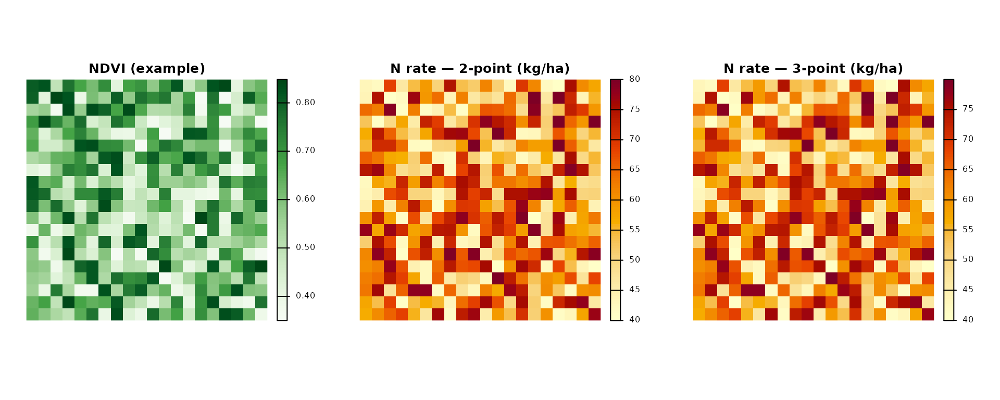
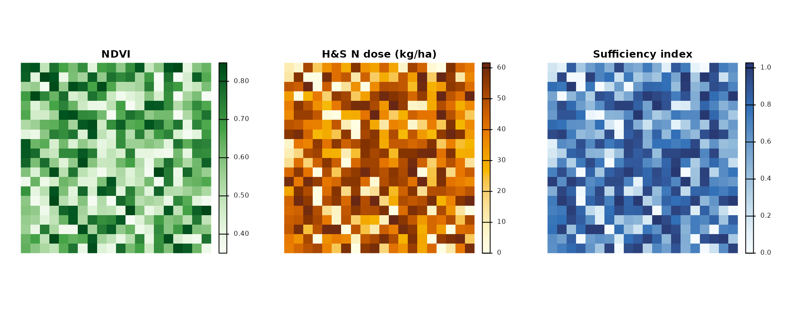
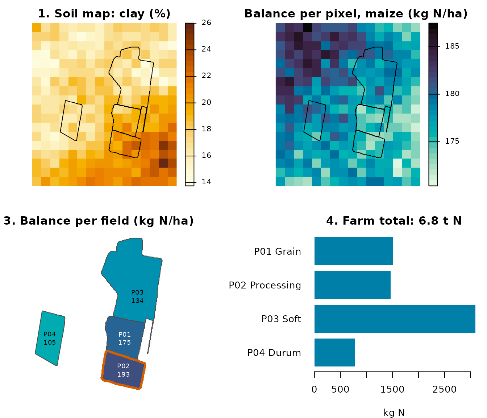

Nitrogen Fertilization Management with agrinutri: A Comprehensive Guide
Michele Croci, Stefano Amaducci
2026-11-14
Source:vignettes/agrinutri.Rmd
agrinutri.RmdIntroduction
The agrinutri R package provides a comprehensive toolkit for calculating nitrogen fertilization requirements in field crops following the Emilia-Romagna Regional Recommendations for integrated production. This vignette demonstrates how to use agrinutri for nitrogen balance calculations, soil fertility assessment, and precision agriculture applications.
What is Nitrogen Balance?
Nitrogen balance is a quantitative method that accounts for all nitrogen inputs and outputs in an agricultural system. The general equation used in agrinutri is:
Where:
- A: Crop nitrogen requirements (kg/ha)
- B: Soil nitrogen supply (sum of b1 and b2) (kg/ha)
- C1: Nitrogen leaching loss in winter (kg/ha)
- C2: Nitrogen leaching loss in spring (kg/ha)
- D: Immobilization and dispersion losses (kg/ha)
- E: Nitrogen from previous crop residues (kg/ha)
- F_{org}: Nitrogen from organic fertilizers (kg/ha)
- G: Natural nitrogen contributions (kg/ha)
Normative framework: DPI 2025–2026 and FertDPI
agrinutri implements the method of the balance (Allegato 2) of the Disciplinari di Produzione Integrata (DPI) Emilia-Romagna, in line with the Guida alla Fertilizzazione Minerale e Organica (DPI 2025) and the regional tool FertDPI / Fert_Office. References: DPI Norme Generali (Allegato 2, 3, 4, 6, 7, 9), Reg. reg. 2/2024 and 3/2017, Direttiva Nitrati (91/676/CEE). In Zone Vulnerabili ai Nitrati (ZVN) the MAS (limiti di massima applicazione standard) are binding and the 170 kg N/ha/year ceiling from livestock effluents applies at farm level.
Formula N (Guida DPI 2025):
N da apportare = A − B +
C + D − E −
F − G
-
A = Fabbisogni colturali (assorbimenti unitari ×
produzione attesa).
-
B = Fertilità del suolo: B1
(mineralizzazione S.O.: coefficiente × S.O. % × coefficiente tempo) +
B2 (azoto pronto: coefficiente × N totale ‰; solo
colture con ciclo < 1 anno). Per pluriennali B = B1 soltanto.
-
C = Perdite per lisciviazione: Ca
(autunno-inverno: <150 mm nessuna; 150–250 mm perdita progressiva;
>250 mm tutto l’N pronto) + Cb (febbraio: 1 kg N/ha
ogni 10 mm oltre 250 mm cumulati).
-
D = Immobilizzazione e dispersione = B × fattore di
correzione fc (in funzione di ossigeno e tessitura: es. buona
0,15–0,25, moderata 0,20–0,30, impedita 0,30–0,40).
-
E = N da residui della precessione (tabella:
cereali paglia asportata −10, interrata −30; medica +80; soia 0;
leguminose da granella +40; ecc.).
-
F = N da fertilizzazioni organiche anni precedenti
(ammendanti 50/30/20 %; Cattle slurry 30/15/10; suino/pollina
15/10/5).
- G = Apporti naturali (precipitazioni; fissazione per leguminose).
agrinutri computes the balance and subtracts the current-year organic N (Forg) to obtain the mineral N to apply. Fractioning rules (max 100 kg/ha N per intervention for herbaceous crops, 60 kg/ha for tree crops; min 7 days between interventions) and presemina/autumn caps (e.g. max 30 kg/ha presemina, max 40 kg/ha arboree before 15 Oct) are set by DPI and must be respected in the field plan.
Soil texture (DPI groupings): The 12 USDA texture
classes are grouped into three macro-categories used for efficiency and
coefficients: (1) Tendenzialmente sabbioso (S, SF, FS), (2)
Franco / Medio impasto (L, F, FL, FSA, FA), (3)
Tendenzialmente argilloso (FLA, AS, AL, A). agrinutri’s
tri3() and calc_soil_group_and_id_rag()
provide texture and soil group.
Maximum allowed doses (MAS): Each crop has a ceiling
for N and P₂O₅ that must not be exceeded. Use get_MAS(crop)
and check_MAS(crop, N_planned) to retrieve and check
against MAS (see section below).
Organic N efficiency (DPI): The share of organic N
available to the crop in the year of application depends on fertilizer
type, distribution technique (efficient / medium /
low), and soil texture. Efficient = injection,
fertigation, incorporation within 4 h; medium = band spreading with
quick incorporation; low = surface spreading without incorporation.
Ammendanti compostati use a fixed 40% efficiency. agrinutri’s
organic_fertilization() uses factors by source and
frequency; for DPI-specific efficiency by soil and distribution, refer
to the FertDPI ‘Efficienza’ sheet or the regional guide.
Package Overview
agrinutri provides the following categories of functions:
-
Field-scale nitrogen balance -
N_balance()plus the ten component helpers (crop demand, soil supply, leaching, immobilisation, previous-crop residue, organic contributions, natural deposition). -
Phosphorus and potassium balance -
P_balance(),K_balance(). -
Distribution plan -
plan_distribution()with MAS and 170 kg N ZVN checks. -
Precision agriculture -
variable_rate_N(),estimate_N_rate_from_calibration_curve()andestimate_N_rate_from_holland_schepers()for VI-based VRT;build_strip_prescription()for machine-width strips along an A-B line;export_prescription()/export_prescription_all()for Shapefile, GeoJSON, KML, GeoPackage, John Deere, Trimble and ISOXML TASKDATA formats. -
Remote-sensing diagnosis -
compute_vi()(six VIs),compute_NNI()/compute_NNI_from_S2()/crop_params_NNI()for the GPR-based pipeline,nni_from_vi_empirical()for the single-VI regression path,estimate_biophysical()for canopy trait retrieval. -
Farm-level workflow -
farm_balance()iteratesN_balance()over every feature of a GeoJSON / Shapefile and returns an enrichedsflayer ready for export. -
Shiny application -
run_app()opens a six-tab web interface with interactive forms, leaflet maps and one-click export.
Getting Started: A Simple Example
Let’s start with a basic example calculating the nitrogen balance for a wheat crop:
# Calculate nitrogen balance for winter wheat
wheat_balance <- N_balance(
expected_yield_tons_ha = 8,
crop = "Soft wheat FF - strong (grain)",
ccp = "Autumn-winter crop <150 days",
sand = 30,
clay = 25,
Ntot = 1.2,
SOM = 2.0,
CN = 9,
oxygen_availability = "Normal",
winter_rain = 160,
start_spring_rain = 40,
prev_crop = "Winter cereals straw removal",
source = "Cattle slurry",
fertorg_frequency = "every year",
location = "Plain adjacent to urbanized areas",
forg_quantity = 100
)
# Display results
print(wheat_balance)
#> A B b1 b2 C1 C2 D E F Forg G G_deposition G_fixation
#> 1 248.8 55.25 31.2 24.05 3.12 0 23.8125 0 0 198.9 10 10 0
#> no_till_reduction C_tempo N_pct N_limit surplus_pluviometrico
#> 1 0 0.5 1 340 FALSE
# Calculate final nitrogen requirement
required_N <- calculate_N_fertilization(wheat_balance)
cat("\nRequired nitrogen fertilization:", round(required_N, 2), "kg/ha\n")
#>
#> Required nitrogen fertilization: 11.58 kg/haUnderstanding the Nitrogen Balance Components
Component 1: Crop Nitrogen Demand (A)
The crop nitrogen demand is calculated based on expected yield and crop-specific nitrogen uptake coefficients:
# Calculate crop nitrogen demand
crop_demand <- calc_crop_N_demand(
expected_yield_tons_ha = 10,
crop = "Soft wheat FF - strong (grain)"
)
print(crop_demand)
#> $N_requirement
#> [1] 311
#>
#> $units
#> [1] "kg/ha"
#>
#> $n_fixation_pct
#> [1] 0
# Available crops in the database
head(uptake_table, 10)
#> id crop_id crop N P2O5
#> 1 1 A2 Kiwifruit (green flesh) - fruit, wood and leaves 0.59 0.1600000
#> 2 2 Ab2 Kiwifruit (yellow flesh) - fruit, wood and leaves 0.59 0.1600000
#> 3 3 A4 Apricot (medium yield) - fruit, wood and leaves 0.55 0.1300000
#> 4 4 A5 Apricot (high yield) - fruit, wood and leaves 0.55 0.1300000
#> 5 5 A6 Other fruit trees - fruit, wood and leaves 0.33 0.2838462
#> 6 6 A8 Orange - fruit, wood and leaves 0.28 0.1300000
#> 7 7 A10 Chestnut (fruit only) 0.84 0.3300000
#> 8 8 A12 Cherry - fruit, wood and leaves 0.67 0.2200000
#> 9 9 A14 Clementine - fruit, wood and leaves 0.28 0.1300000
#> 10 10 A15 Quince (fruit, wood and leaves) 0.33 0.0800000
#> K2O balance reference_yield std_N_demand std_P2O5_demand
#> 1 0.5900000 si 25 147.5 40.0
#> 2 0.5900000 si 30 177.0 48.0
#> 3 0.5300000 si 13 71.5 16.9
#> 4 0.5000000 si 18 99.0 23.4
#> 5 0.7411538 si NA NA NA
#> 6 0.3900000 si 30 84.0 39.0
#> 7 0.8600000 si NA NA NA
#> 8 0.5900000 si 9 60.3 19.8
#> 9 0.4300000 si 25 70.0 32.5
#> 10 0.3300000 si 60 198.0 48.0
#> std_K2O_demand harvested_part
#> 1 147.5 frutti
#> 2 177.0 frutti
#> 3 68.9 frutti
#> 4 90.0 frutti
#> 5 NA frutti
#> 6 117.0 frutti
#> 7 NA frutti
#> 8 53.1 frutti
#> 9 107.5 frutti
#> 10 198.0 frutti
#> crop_en
#> 1 Kiwifruit (green flesh) - fruit, wood and leaves
#> 2 Kiwifruit (yellow flesh) - fruit, wood and leaves
#> 3 Apricot (medium yield) - fruit, wood and leaves
#> 4 Apricot (high yield) - fruit, wood and leaves
#> 5 Other fruit trees - fruit, wood and leaves
#> 6 Orange - fruit, wood and leaves
#> 7 Chestnut (fruit only)
#> 8 Cherry - fruit, wood and leaves
#> 9 Clementine - fruit, wood and leaves
#> 10 Quince (fruit, wood and leaves)
#> crop_it
#> 1 Actinidia polpa verde frutti, legno e foglie
#> 2 Actinidia polpa gialla frutti, legno e foglie
#> 3 Albicocco media produzione frutti, legno e foglie
#> 4 Albicocco alta produzione frutti, legno e foglie
#> 5 Altri fruttiferi frutti, legno e foglie
#> 6 Arancio frutti, legno e foglie
#> 7 Castagno solo frutti
#> 8 Ciliegio frutti, legno e foglie
#> 9 Clementine frutti, legno e foglie
#> 10 Cotogno (frutti, legno e foglie)Component 2: Soil Fertility (B = b1 + b2)
Soil fertility accounts for both readily available nitrogen (b1) and mineralizable nitrogen from organic matter (b2):
# Calculate soil fertility
soil_N <- soil_fertility(
Ntot = 1.2,
SOM = 2.5,
soil.group = "Sandy textures",
CN = 9,
ccp = "Autumn-winter crop <150 days"
)
print(soil_N)
#> $b1
#> [1] 33.6
#>
#> $b2
#> [1] 43.75
#>
#> $b1_potential
#> [1] 33.6
#>
#> $no_till_reduction
#> [1] 0
#>
#> $B
#> [1] 77.35
#>
#> $C_tempo
#> [1] 0.5
#>
#> $units
#> [1] "kg/ha"
cat("Total soil N supply (B):", soil_N$b1 + soil_N$b2, "kg/ha\n")
#> Total soil N supply (B): 77.35 kg/haDetermining Soil Group
First, you need to determine the soil group based on texture:
# Classify soil texture using simplified method
texture_class <- tri3(clay = 20, sand = 35)
cat("Simplified texture class:", texture_class, "\n")
#> Simplified texture class: F
# Get detailed classification and soil properties
soil_props <- calc_soil_group_and_id_rag(clay = 20, sand = 35)
print(soil_props)
#> $soil.group
#> [1] "Loamy textures"
#>
#> $id_rag
#> [1] 2
#>
#> $TRI3
#> [1] "F"Component 3: Leaching Losses (C1, C2)
Leaching losses depend on rainfall and soil drainage properties:
# Calculate leaching losses
leaching <- leaching_loss(
winter_rain = 180,
start_spring_rain = 45,
oxygen_availability = "Normal",
id_rag = 3,
b1 = 25
)
print(leaching)
#> $C1
#> [1] 7.5
#>
#> $C2
#> [1] 0
#>
#> $surplus_pluviometrico
#> [1] FALSE
cat("Total leaching loss:", leaching$C1 + leaching$C2, "kg/ha\n")
#> Total leaching loss: 7.5 kg/haComponent 4: Immobilization Loss (D)
Immobilization occurs when soil microorganisms use nitrogen for their own growth:
# Calculate immobilization loss
immobilization <- calc_N_immobilization_loss(
B = 50,
oxygen_availability = "Normal",
id_rag = 3
)
cat("Immobilization loss (D):", immobilization, "kg/ha\n")
#> Immobilization loss (D): 15 kg/haComponent 5: Previous Crop Residues (E)
Nitrogen contribution from previous crop residues:
# Nitrogen from previous crop
residue_N <- nitrogen_from_previous_crop_residues(
previous_crop = "Winter cereals straw removal"
)
cat("Nitrogen from residues (E):", residue_N, "kg/ha\n")
#> Nitrogen from residues (E): -10 kg/ha
# Available previous crops
head(e.table, 10)
#> ID_Pre previous_crop N legume
#> 1 1 Sugar beet 30 FALSE
#> 2 2 Winter cereals straw removal -10 FALSE
#> 3 3 Winter cereals straw burial -30 FALSE
#> 4 4 Rapeseed 20 FALSE
#> 5 5 Sunflower 0 FALSE
#> 6 6 Maize stalks removed -10 FALSE
#> 7 7 Maize stalks buried -40 FALSE
#> 8 8 Alfalfa thinned 60 TRUE
#> 9 9 Alfalfa in good conditions 80 TRUE
#> 10 10 Leaf vegetables 25 FALSE
#> previous_crop_it
#> 1 Barbabietola
#> 2 Cereale autunno-vern. Paglia asportata
#> 3 Cereale autunno-vern. Paglia interrata
#> 4 Colza
#> 5 Girasole
#> 6 Mais stocchi asportati
#> 7 Mais stocchi interrati
#> 8 Medicaio diradato
#> 9 Medicaio in buone conndizioni
#> 10 Orticole a fogliaComponent 6: Organic Fertilizer (Forg)
Contribution from organic fertilizers:
# Calculate organic fertilizer contribution
organic_N <- organic_fertilization(
source = "Cattle slurry",
frequency = "every year",
quantity = 100
)
cat("Organic fertilizer N (Forg):", organic_N, "kg/ha\n")
#> Organic fertilizer N (Forg): 0.3 kg/ha
# Compare different organic sources (names must match `f.table$source`)
sources <- c("Cattle slurry", "Manures", "Pig slurry or poultry manure")
organic_comparison <- data.frame(
source = sources,
N_contribution = sapply(sources, function(s) {
organic_fertilization(source = s, frequency = "every year", quantity = 100)
})
)
print(organic_comparison)
#> source N_contribution
#> Cattle slurry Cattle slurry 0.30
#> Manures Manures 0.50
#> Pig slurry or poultry manure Pig slurry or poultry manure 0.15Component 7: Natural Contribution (G)
Natural nitrogen inputs from atmospheric deposition:
# Calculate natural nitrogen contribution
natural_N <- natural_contribution(
location = "Plain adjacent to urbanized areas",
ccp = "Autumn-winter crop <150 days"
)
cat("Natural contribution (G):", natural_N, "kg/ha\n")
#> Natural contribution (G): 10 kg/ha
# Available locations
head(g.table, 10)
#> ID_UBI location annual_deposition
#> 1 1 Plain adjacent to urbanized areas 20
#> 2 2 Isolated plain 15
#> 3 3 Hill or mountain 10
#> location_it
#> 1 Pianura limitrofa a zone urbanizzate
#> 2 Pianura isolata
#> 3 Collina o montagnaComplete Workflow: Maize Production Example
Let’s work through a complete example for maize production:
# Step 1: Define field parameters
maize_params <- list(
expected_yield_tons_ha = 12, # tons/ha
crop = "Silage maize (class 700)", # or "Silage maize (class 700)" (alias)
ccp = "Spring-summer crop 100–130 days",
clay = 28,
sand = 32,
Ntot = 1.5,
SOM = 2.8,
CN = 10,
oxygen_availability = "Normal",
winter_rain = 165,
start_spring_rain = 35,
prev_crop = "Winter cereals straw removal",
source = "Cattle slurry",
fertorg_frequency = "every year",
location = "Plain adjacent to urbanized areas",
forg_quantity = 90
)
# Step 2: Calculate complete nitrogen balance
maize_balance <- do.call(N_balance, maize_params)
# Step 3: Display detailed results
cat("=== MAIZE NITROGEN BALANCE ===\n")
#> === MAIZE NITROGEN BALANCE ===
print(maize_balance)
#> A B b1 b2 C1 C2 D E F Forg G G_deposition
#> 1 46.8 84.1178 39 45.1178 5.85 0 31.02945 0 0 179.01 13.4 13.4
#> G_fixation no_till_reduction C_tempo N_pct N_limit surplus_pluviometrico
#> 1 0 0 0.67 1 340 FALSE
# Step 4: Calculate final requirement
maize_N_requirement <- calculate_N_fertilization(maize_balance)
cat("\nFinal N requirement:", round(maize_N_requirement, 2), "kg/ha\n")
#>
#> Final N requirement: 0 kg/ha
# Step 5: Interpretation
cat("\n=== INTERPRETATION ===\n")
#>
#> === INTERPRETATION ===
cat("Crop demand (A):", round(maize_balance$A, 1), "kg/ha\n")
#> Crop demand (A): 46.8 kg/ha
cat("Soil supply (B):", round(maize_balance$B, 1), "kg/ha\n")
#> Soil supply (B): 84.1 kg/ha
cat("Leaching losses (C1+C2):", round(maize_balance$C1 + maize_balance$C2, 1), "kg/ha\n")
#> Leaching losses (C1+C2): 5.8 kg/ha
cat("Immobilization (D):", round(maize_balance$D, 1), "kg/ha\n")
#> Immobilization (D): 31 kg/ha
cat("Residue contribution (E):", round(maize_balance$E, 1), "kg/ha\n")
#> Residue contribution (E): 0 kg/ha
cat("Organic fertilizer (Forg):", round(maize_balance$Forg, 1), "kg/ha\n")
#> Organic fertilizer (Forg): 179 kg/ha
cat("Natural contribution (G):", round(maize_balance$G, 1), "kg/ha\n")
#> Natural contribution (G): 13.4 kg/haChecking against Maximum Allowed Doses (MAS)
DPI (Allegato 9, Reg. reg. 2/2024) sets maximum allowed doses
(MAS) of N per crop; in ZVN they are binding. The planned dose
must not exceed MAS. Use get_MAS(crop, edition = "2025")
for the ZVN table from the Guida alla Fertilizzazione 2025, or
get_MAS(crop, edition = "2026") (default) for the
FertDPI-style table. Use check_MAS() to verify a planned N
dose.
# List MAS for main crops (default: edition 2026)
get_MAS()
#> crop
#> 1 Kiwifruit (green flesh) - fruit, wood and leaves
#> 2 Kiwifruit (yellow flesh) - fruit, wood and leaves
#> 3 Apricot (medium yield) - fruit, wood and leaves
#> 4 Apricot (high yield) - fruit, wood and leaves
#> 5 Other fruit trees - fruit, wood and leaves
#> 6 Orange - fruit, wood and leaves
#> 7 Chestnut (fruit only)
#> 8 Cherry - fruit, wood and leaves
#> 9 Clementine - fruit, wood and leaves
#> 10 Quince (fruit, wood and leaves)
#> 11 Fig - fruit, wood and leaves
#> 12 Persimmon - fruit, wood and leaves
#> 13 Lemon - fruit, wood and leaves
#> 14 Hop (green)
#> 15 Mandarin - fruit, wood and leaves
#> 16 Almond - fruit, wood and leaves
#> 17 Apple - fruit, wood and leaves
#> 18 Blueberry
#> 19 Asian pear (Nashi) - fruit, wood and leaves
#> 20 Loquat - fruit, wood and leaves
#> 21 Nectarine - fruit, wood and leaves
#> 22 Hazelnut - fruit, wood and leaves
#> 23 Walnut - fruit, wood and leaves
#> 24 Olive - olives, wood and leaves
#> 25 Pear (medium yield) - fruit, wood and leaves
#> 26 Pear (high yield) - fruit, wood and leaves
#> 27 Peach - fruit, wood and leaves
#> 28 Poplar
#> 29 Energy poplar
#> 30 Plum - fruit, wood and leaves
#> 31 Table grape - bunches, shoots and leaves
#> 32 Grapevine for wine (hill and mountain) - bunches, shoots and leaves
#> 33 Vineyard (plain) - grapes, wood and leaves
#> 34 Other straw cereals (whole plant)
#> 35 Oat
#> 36 Oat (whole plant)
#> 37 Sugar beet (whole plant)
#> 38 Sugar beet (roots)
#> 39 Fibre hemp
#> 40 Abyssinian cabbage
#> 41 Chickpea
#> 42 Rapeseed
#> 43 Rapeseed (whole plant)
#> 44 Spelt
#> 45 Spelt (whole plant)
#> 46 Faba bean (grain)
#> 47 Sunflower (achenes)
#> 48 Sunflower (whole plant)
#> 49 Durum wheat (grain)
#> 50 Durum wheat (whole plant)
#> 51 Soft wheat FP/FPS (grain)
#> 52 Soft wheat FP/FPS (whole plant)
#> 53 Biscuit wheat (grain)
#> 54 Biscuit wheat (whole plant)
#> 55 Soft wheat FF - strong (grain)
#> 56 Soft wheat FF - strong (whole plant)
#> 57 Lentil
#> 58 Fibre flax
#> 59 Linseed (grain)
#> 60 Lupin
#> 61 Grain maize 300-400 (grain)
#> 62 Grain maize 300-400 (whole plant)
#> 63 Grain maize 500-700 (grain)
#> 64 Grain maize 500-700 (whole plant)
#> 65 Sweet maize (ears)
#> 66 Sweet maize (whole plant)
#> 67 Silage maize (class 500)
#> 68 Silage maize (class 700)
#> 69 Barley (grain)
#> 70 Barley (whole plant)
#> 71 Foxtail millet
#> 72 Protein pea
#> 73 Protein pea + residues
#> 74 Horseradish (green manure)
#> 75 Rice (grain)
#> 76 Rice (grain + straw)
#> 77 Rye (grain)
#> 78 Rye (whole plant)
#> 79 Indian mustard
#> 80 Soybean (grain)
#> 81 Soybean (whole plant)
#> 82 Forage sorghum
#> 83 Grain sorghum (grain only)
#> 84 Grain sorghum (whole plant)
#> 85 Bright tobacco
#> 86 Bright tobacco (whole plant)
#> 87 Burley tobacco
#> 88 Burley tobacco (whole plant)
#> 89 Triticale
#> 90 Triticale (whole plant)
#> 91 Oat silage
#> 92 Rapeseed silage
#> 93 Orchardgrass
#> 94 Alfalfa
#> 95 Autumn-spring cereal/crucifer grass
#> 96 Autumn-spring legume grass
#> 97 Biennial or grass-meadow
#> 98 Biennial mixed or polyphytic meadow
#> 99 Spelt silage
#> 100 Tall fescue
#> 101 Timothy grass
#> 102 Durum wheat silage
#> 103 Soft wheat silage
#> 104 Ryegrass for silage
#> 105 Italian ryegrass
#> 106 Perennial ryegrass
#> 107 Barley silage
#> 108 Grass meadows
#> 109 Clover meadow
#> 110 Pure legume meadow - Clover
#> 111 Pure legume meadow - Birdsfoot trefoil
#> 112 Pure legume meadow - Sulla
#> 113 Pure legume meadow - Sainfoin
#> 114 Hill pastures
#> 115 Polyphytic meadows (>50% legumes)
#> 116 Polyphytic meadows
#> 117 Permanent lowland meadows
#> 118 Mixed meadow
#> 119 Rye silage
#> 120 Triticale silage
#> 121 Garlic
#> 122 Green asparagus (whole plant)
#> 123 Green asparagus (high yield)
#> 124 Basil (medium yield)
#> 125 Basil (high yield, multi-cut)
#> 126 Chard and leaf beet (fresh market, medium yield)
#> 127 Chard and leaf beet (fresh market, high yield, multi-cut)
#> 128 Leaf beet (processing, medium yield, multi-cut)
#> 129 Chard (processing, high yield, multi-cut)
#> 130 Broccoli rabe / turnip tops
#> 131 Broccoli (medium yield)
#> 132 Broccoli (high yield)
#> 133 Head cabbage (medium yield)
#> 134 Head cabbage (high yield)
#> 135 Artichoke
#> 136 Cardoon (medium yield)
#> 137 Cardoon (high yield)
#> 138 Carrot
#> 139 Cauliflower (medium yield)
#> 140 Cauliflower (high yield)
#> 141 Savoy cabbage (fresh market, medium yield)
#> 142 Savoy cabbage (fresh market, high yield)
#> 143 Kale, black cabbage and kohlrabi
#> 144 Fresh cucumber (medium yield)
#> 145 Fresh cucumber (high yield)
#> 146 Chicory (fresh market, medium yield)
#> 147 Chicory (fresh market, high yield)
#> 148 Chicory (processing, high yield, multi-cut)
#> 149 Onion (medium yield)
#> 150 Onion (high yield)
#> 151 Watermelon
#> 152 Endive and escarole (medium yield)
#> 153 Endive and escarole (high yield)
#> 154 Green bean
#> 155 Shelling bean in pods
#> 156 Dry bean
#> 157 Fresh broad bean
#> 158 Fennel
#> 159 Strawberry
#> 160 Lettuce
#> 161 Lettuce (greenhouse)
#> 162 Eggplant (field, medium yield)
#> 163 Eggplant (greenhouse, high yield)
#> 164 Melon
#> 165 Potato
#> 166 Pepper (greenhouse, high yield)
#> 167 Pepper (greenhouse, medium yield)
#> 168 Berries
#> 169 Processing pea (grain)
#> 170 Fresh-market pea (pods)
#> 171 Processing tomato (medium yield)
#> 172 Processing tomato (high yield)
#> 173 Fresh-market tomato (field)
#> 174 Fresh-market tomato (greenhouse)
#> 175 Leek
#> 176 Parsley (medium yield)
#> 177 Parsley (high yield, multi-cut)
#> 178 Radicchio (red chicory, medium yield)
#> 179 Radicchio (red chicory, high yield)
#> 180 Turnip
#> 181 Radish
#> 182 Rocket (medium yield)
#> 183 Rocket (high yield, multi-cut)
#> 184 Shallot
#> 185 Celery (medium yield)
#> 186 Celery (high yield)
#> 187 Spinach (high yield, multi-cut)
#> 188 Spinach (medium yield)
#> 191 Savoy cabbage (processing)
#> 192 Pumpkin
#> 193 Courgette (processing, medium yield)
#> 194 Courgette (processing, high yield)
#> 195 Courgette (fresh market, medium yield)
#> 196 Courgette (fresh market, high yield)
#> 197 Sugar beet seed (seed phase)
#> 198 Carrot seed (seed phase)
#> 199 Carrot seed (nursery phase)
#> 200 Cabbage (seed)
#> 201 Cucumber (seed)
#> 202 Chicory (seed)
#> 203 Onion seed (seed phase)
#> 204 Onion seed (nursery phase)
#> 205 Coriander (seed)
#> 206 Alfalfa (seed)
#> 207 Fennel (seed)
#> 208 Durum wheat (seed, grain)
#> 209 Soft wheat (seed, grain)
#> 210 Sunflower (seed, grain)
#> 211 Lettuce (seed)
#> 212 Barley (seed, grain)
#> 213 Protein pea (seed, grain)
#> 214 Parsley (seed)
#> 215 Radish (seed)
#> 216 Rye (seed, grain)
#> 217 Soybean (seed, grain)
#> 218 Triticale (seed, grain)
#> 219 Clover (seed)
#> 220 Leaf beet
#> 222 Baby chicory
#> 224 Brassica leaves and stems
#> 226 Head lettuce
#> 227 Baby lettuce (first cut)
#> 228 Baby lettuce (second cut)
#> 229 Rocket (first cut)
#> 230 Rocket (second cut)
#> 231 Baby spinach (first cut)
#> 232 Baby spinach (second cut)
#> 233 Corn salad
#> 234 generic baby leaf
#> 235 5
#> 236 Currently selected crop
#> 238 Previous crop
#> 239 Maize stalks removed
#> crop_it
#> 1 Actinidia polpa verde frutti, legno e foglie
#> 2 Actinidia polpa gialla frutti, legno e foglie
#> 3 Albicocco media produzione frutti, legno e foglie
#> 4 Albicocco alta produzione frutti, legno e foglie
#> 5 Altri fruttiferi frutti, legno e foglie
#> 6 Arancio frutti, legno e foglie
#> 7 Castagno solo frutti
#> 8 Ciliegio frutti, legno e foglie
#> 9 Clementine frutti, legno e foglie
#> 10 Cotogno (frutti, legno e foglie)
#> 11 Fico frutti, legno e foglie
#> 12 Kaki frutti, legno e foglie
#> 13 Limone frutti, legno e foglie
#> 14 Luppolo (verde)
#> 15 Mandarino frutti, legno e foglie
#> 16 Mandorlo frutti, legno e foglie
#> 17 Melo frutti, legno e foglie
#> 18 Mirtillo
#> 19 Nashi frutti, legno e foglie
#> 20 Nespolo frutti, legno e foglie
#> 21 Nettarine frutti, legno e foglie
#> 22 Nocciolo frutti, legno e foglie
#> 23 Noce da frutto frutti, legno e foglie
#> 24 Olivo olive, legno e foglie
#> 25 Pero media produzione frutti, legno e foglie
#> 26 Pero alta produzione frutti, legno e foglie
#> 27 Pesco frutti, legno e foglie
#> 28 Pioppo
#> 29 Pioppo da energia
#> 30 Susino frutti, legno e foglie
#> 31 Uva da tavola grappoli, tralci e foglie
#> 32 Vite per uva da vino (collina e montagna) grappoli, tralci e foglie
#> 33 Vite per uva da vino (pianura) grappoli, legno e foglie
#> 34 Altri cereali a paglia (pianta intera)
#> 35 Avena
#> 36 Avena pianta intera
#> 37 Barbababietola da zucchero (pianta intera)
#> 38 Barbabietola da zucchero (radici)
#> 39 Canapa da fibra
#> 40 Cavolo abissino
#> 41 Cece
#> 42 Colza
#> 43 Colza pianta intera
#> 44 Farro
#> 45 Farro (pianta intera)
#> 46 Favino da granella
#> 47 Girasole (acheni)
#> 48 Girasole (pianta intera)
#> 49 Grano duro (granella)
#> 50 Grano duro (pianta intera)
#> 51 Grano tenero FP/FPS (granella)
#> 52 Grano tenero FP/FPS (pianta intera)
#> 53 Grano tenero biscottiero (granella)
#> 54 Grano tenero biscottiero pianta intera
#> 55 Grano tenero FF (granella)
#> 56 Grano tenero FF (pianta intera)
#> 57 Lenticchia
#> 58 Lino fibra
#> 59 Lino granella
#> 60 Lupino
#> 61 Mais da granella 300-400 (granella)
#> 62 Mais da granella 300-400 (pianta intera)
#> 63 Mais da granella 500-700 (granella)
#> 64 Mais da granella 500-700 (pianta intera)
#> 65 Mais dolce (spighe)
#> 66 Mais dolce (pianta intera)
#> 67 Mais trinciato classe 500
#> 68 Mais trinciato classe 700
#> 69 Orzo (granella)
#> 70 Orzo (pianta intera)
#> 71 Panico
#> 72 Pisello proteico
#> 73 Pisello proteico + residui
#> 74 Rafano (da sovescio)
#> 75 Riso (granella)
#> 76 Riso (granella+paglia)
#> 77 Segale (granella)
#> 78 Segale pianta intera
#> 79 Senape indiana
#> 80 Soia (granella)
#> 81 Soia (pianta intera)
#> 82 Sorgo da foraggio
#> 83 Sorgo da granella (solo granella)
#> 84 Sorgo da granella (pianta intera)
#> 85 Tabacco Bright
#> 86 Tabacco Bright pianta intera
#> 87 Tabacco Burley
#> 88 Tabacco Burley pianta intera
#> 89 Triticale
#> 90 Triticale pianta intera
#> 91 Avena insilata
#> 92 Colza insilato
#> 93 Erba mazzolina
#> 94 Erba medica
#> 95 Erbai aut prim. Di cer. O cruc.
#> 96 Erbai aut prim. Di leguminose
#> 97 Erbai biennali o Prati avv. di Graminacee
#> 98 Erbai biennali misti o Prati avv. Polifita
#> 99 Farro insilato
#> 100 Festuca arundinacea
#> 101 Fleolo (coda di topo)
#> 102 Grano duro insilato
#> 103 Grano tenero insilato
#> 104 Loglio da insilare
#> 105 Loiessa
#> 106 Loietto perenne
#> 107 Orzo insilato
#> 108 Prati di graminacee
#> 109 Prati di trifoglio
#> 110 Prati di leguminose in purezza - Trifoglio
#> 111 Prati di leguminose in purezza - Ginestrino
#> 112 Prati di leguminose in purezza - Sulla
#> 113 Prati di leguminose in purezza - Lupinella
#> 114 Prati pascoli in collina
#> 115 Prati polifiti >50% leguminose
#> 116 Prati polifiti
#> 117 Prati stabili in pianura
#> 118 Prato misto
#> 119 Segale insilato
#> 120 Triticale insilato
#> 121 Aglio
#> 122 Asparago verde (pianta intera)
#> 123 Asparago verde alta produzione
#> 124 Basilico media produzione
#> 125 Basilico alta produzione piu tagli
#> 126 Bietola da costa e da foglia m. fresco media produzione
#> 127 Bietola da costa e da foglia m. fresco alta produzione piu tagli
#> 128 Bietola da foglie per l'industria media produzione piu tagli
#> 129 Bietola da costa per l'industria alta produzione piu tagli
#> 130 Broccoletto - Cime di rapa
#> 131 Broccolo media produzione
#> 132 Broccolo alta produzione
#> 133 Cappuccio media produzione
#> 134 Cappuccio alta produzione
#> 135 Carciofo
#> 136 Cardo media produzione
#> 137 Cardo alta produzione
#> 138 Carota
#> 139 Cavolfiore media produzione
#> 140 Cavolfiore alta produzione
#> 141 Cavolo verza mercato media produzione
#> 142 Cavolo verza mercato alta produzione
#> 143 Cavolo Riccio, Cavolo nero e Cavolo Rapa
#> 144 Cetriolo da mensa media produzione
#> 145 Cetriolo da mensa alta produzione
#> 146 Cicoria da mercato media produzione
#> 147 Cicoria da mercato alta produzione
#> 148 Cicoria da industria alta produzione piu tagli
#> 149 Cipolla media produzione
#> 150 Cipolla alta produzione
#> 151 Cocomero
#> 152 Endivie (indivie riccia e scarola) media produzione
#> 153 Endivie (indivie riccia e scarola) alta produzione
#> 154 Fagiolino
#> 155 Fagiolo in baccelli da sgranare
#> 156 Fagiolo secco
#> 157 Fava da consumo fresco
#> 158 Finocchio
#> 159 Fragola
#> 160 Lattuga
#> 161 Lattuga coltura protetta
#> 162 Melanzana in pieno campo media produzione
#> 163 Melanzana coltura protetta alta produzione
#> 164 Melone
#> 165 Patata
#> 166 Peperone in serra alta produzione
#> 167 Peperone in serra media produzione
#> 168 Piccoli frutti
#> 169 Pisello da industria (grani)
#> 170 Pisello da mercato fresco (baccelli)
#> 171 Pomodoro da industria media produzione
#> 172 Pomodoro da industria alta produzione
#> 173 Pomodoro da mensa a pieno campo
#> 174 Pomodoro da mensa in serra
#> 175 Porro
#> 176 Prezzemolo media produzione
#> 177 Prezzemolo alta produzione piu tagli
#> 178 Radicchio (cicoria a foglie colorate) media produzione
#> 179 Radicchio (cicoria a foglie colorate) alta produzione
#> 180 Rapa
#> 181 Ravanello
#> 182 Rucola media produzione
#> 183 Rucola alta produzione con piu tagli
#> 184 Scalogno
#> 185 Sedano media produzione
#> 186 Sedano alta produzione
#> 187 Spinacio alta produzione con piu tagli
#> 188 Spinacio media produzione
#> 191 Verza da industria
#> 192 Zucca
#> 193 Zucchino da industria media produzione
#> 194 Zucchino da industria alta produzione
#> 195 Zucchino da mercato fresco media produzione
#> 196 Zucchino da mercato fresco alta produzione
#> 197 Barbabiertola da seme (fase porta seme)
#> 198 Carota da seme (fase portaseme)
#> 199 Carota da seme (fase vivaio)
#> 200 Cavoli da seme
#> 201 Cetriolo da seme
#> 202 Cicoria da seme
#> 203 Cipolla da seme (fase portaseme)
#> 204 Cipolla da seme (fase vivaio)
#> 205 Coriandolo da seme
#> 206 Erba medica da seme
#> 207 Finocchio da seme
#> 208 Frumento duro da seme (granella)
#> 209 Frumento tenero da seme (granella)
#> 210 Girasole da seme (granella)
#> 211 Lattuga da seme
#> 212 Orzo da seme (granella)
#> 213 Pisello proteico da seme (granella)
#> 214 Prezzemolo da seme
#> 215 Ravanello da seme
#> 216 Segale da seme (granella)
#> 217 Soia da seme (granella)
#> 218 Triticale da seme (granella)
#> 219 Trifoglio da seme (trifoglio)
#> 220 Bietola da foglia
#> 222 Cicorino
#> 224 Foglie e steli di Brassica
#> 226 Lattuga da cespo
#> 227 Lattughino 1o taglio
#> 228 Lattughino 2o taglio
#> 229 Rucola 1o taglio
#> 230 Rucola 2o taglio
#> 231 Spinacino 1o taglio
#> 232 Spinacino 2o taglio
#> 233 Valerianella
#> 234 baby leaf generica
#> 235 5
#> 236 Coltura attualmente selezionata
#> 238 Precessione
#> 239 Mais stocchi asportati
#> crop_en
#> 1 Kiwifruit (green flesh) - fruit, wood and leaves
#> 2 Kiwifruit (yellow flesh) - fruit, wood and leaves
#> 3 Apricot (medium yield) - fruit, wood and leaves
#> 4 Apricot (high yield) - fruit, wood and leaves
#> 5 Other fruit trees - fruit, wood and leaves
#> 6 Orange - fruit, wood and leaves
#> 7 Chestnut (fruit only)
#> 8 Cherry - fruit, wood and leaves
#> 9 Clementine - fruit, wood and leaves
#> 10 Quince (fruit, wood and leaves)
#> 11 Fig - fruit, wood and leaves
#> 12 Persimmon - fruit, wood and leaves
#> 13 Lemon - fruit, wood and leaves
#> 14 Hop (green)
#> 15 Mandarin - fruit, wood and leaves
#> 16 Almond - fruit, wood and leaves
#> 17 Apple - fruit, wood and leaves
#> 18 Blueberry
#> 19 Asian pear (Nashi) - fruit, wood and leaves
#> 20 Loquat - fruit, wood and leaves
#> 21 Nectarine - fruit, wood and leaves
#> 22 Hazelnut - fruit, wood and leaves
#> 23 Walnut - fruit, wood and leaves
#> 24 Olive - olives, wood and leaves
#> 25 Pear (medium yield) - fruit, wood and leaves
#> 26 Pear (high yield) - fruit, wood and leaves
#> 27 Peach - fruit, wood and leaves
#> 28 Poplar
#> 29 Energy poplar
#> 30 Plum - fruit, wood and leaves
#> 31 Table grape - bunches, shoots and leaves
#> 32 Grapevine for wine (hill and mountain) - bunches, shoots and leaves
#> 33 Vineyard (plain) - grapes, wood and leaves
#> 34 Other straw cereals (whole plant)
#> 35 Oat
#> 36 Oat (whole plant)
#> 37 Sugar beet (whole plant)
#> 38 Sugar beet (roots)
#> 39 Fibre hemp
#> 40 Abyssinian cabbage
#> 41 Chickpea
#> 42 Rapeseed
#> 43 Rapeseed (whole plant)
#> 44 Spelt
#> 45 Spelt (whole plant)
#> 46 Faba bean (grain)
#> 47 Sunflower (achenes)
#> 48 Sunflower (whole plant)
#> 49 Durum wheat (grain)
#> 50 Durum wheat (whole plant)
#> 51 Soft wheat FP/FPS (grain)
#> 52 Soft wheat FP/FPS (whole plant)
#> 53 Biscuit wheat (grain)
#> 54 Biscuit wheat (whole plant)
#> 55 Soft wheat FF - strong (grain)
#> 56 Soft wheat FF - strong (whole plant)
#> 57 Lentil
#> 58 Fibre flax
#> 59 Linseed (grain)
#> 60 Lupin
#> 61 Grain maize 300-400 (grain)
#> 62 Grain maize 300-400 (whole plant)
#> 63 Grain maize 500-700 (grain)
#> 64 Grain maize 500-700 (whole plant)
#> 65 Sweet maize (ears)
#> 66 Sweet maize (whole plant)
#> 67 Silage maize (class 500)
#> 68 Silage maize (class 700)
#> 69 Barley (grain)
#> 70 Barley (whole plant)
#> 71 Foxtail millet
#> 72 Protein pea
#> 73 Protein pea + residues
#> 74 Horseradish (green manure)
#> 75 Rice (grain)
#> 76 Rice (grain + straw)
#> 77 Rye (grain)
#> 78 Rye (whole plant)
#> 79 Indian mustard
#> 80 Soybean (grain)
#> 81 Soybean (whole plant)
#> 82 Forage sorghum
#> 83 Grain sorghum (grain only)
#> 84 Grain sorghum (whole plant)
#> 85 Bright tobacco
#> 86 Bright tobacco (whole plant)
#> 87 Burley tobacco
#> 88 Burley tobacco (whole plant)
#> 89 Triticale
#> 90 Triticale (whole plant)
#> 91 Oat silage
#> 92 Rapeseed silage
#> 93 Orchardgrass
#> 94 Alfalfa
#> 95 Autumn-spring cereal/crucifer grass
#> 96 Autumn-spring legume grass
#> 97 Biennial or grass-meadow
#> 98 Biennial mixed or polyphytic meadow
#> 99 Spelt silage
#> 100 Tall fescue
#> 101 Timothy grass
#> 102 Durum wheat silage
#> 103 Soft wheat silage
#> 104 Ryegrass for silage
#> 105 Italian ryegrass
#> 106 Perennial ryegrass
#> 107 Barley silage
#> 108 Grass meadows
#> 109 Clover meadow
#> 110 Pure legume meadow - Clover
#> 111 Pure legume meadow - Birdsfoot trefoil
#> 112 Pure legume meadow - Sulla
#> 113 Pure legume meadow - Sainfoin
#> 114 Hill pastures
#> 115 Polyphytic meadows (>50% legumes)
#> 116 Polyphytic meadows
#> 117 Permanent lowland meadows
#> 118 Mixed meadow
#> 119 Rye silage
#> 120 Triticale silage
#> 121 Garlic
#> 122 Green asparagus (whole plant)
#> 123 Green asparagus (high yield)
#> 124 Basil (medium yield)
#> 125 Basil (high yield, multi-cut)
#> 126 Chard and leaf beet (fresh market, medium yield)
#> 127 Chard and leaf beet (fresh market, high yield, multi-cut)
#> 128 Leaf beet (processing, medium yield, multi-cut)
#> 129 Chard (processing, high yield, multi-cut)
#> 130 Broccoli rabe / turnip tops
#> 131 Broccoli (medium yield)
#> 132 Broccoli (high yield)
#> 133 Head cabbage (medium yield)
#> 134 Head cabbage (high yield)
#> 135 Artichoke
#> 136 Cardoon (medium yield)
#> 137 Cardoon (high yield)
#> 138 Carrot
#> 139 Cauliflower (medium yield)
#> 140 Cauliflower (high yield)
#> 141 Savoy cabbage (fresh market, medium yield)
#> 142 Savoy cabbage (fresh market, high yield)
#> 143 Kale, black cabbage and kohlrabi
#> 144 Fresh cucumber (medium yield)
#> 145 Fresh cucumber (high yield)
#> 146 Chicory (fresh market, medium yield)
#> 147 Chicory (fresh market, high yield)
#> 148 Chicory (processing, high yield, multi-cut)
#> 149 Onion (medium yield)
#> 150 Onion (high yield)
#> 151 Watermelon
#> 152 Endive and escarole (medium yield)
#> 153 Endive and escarole (high yield)
#> 154 Green bean
#> 155 Shelling bean in pods
#> 156 Dry bean
#> 157 Fresh broad bean
#> 158 Fennel
#> 159 Strawberry
#> 160 Lettuce
#> 161 Lettuce (greenhouse)
#> 162 Eggplant (field, medium yield)
#> 163 Eggplant (greenhouse, high yield)
#> 164 Melon
#> 165 Potato
#> 166 Pepper (greenhouse, high yield)
#> 167 Pepper (greenhouse, medium yield)
#> 168 Berries
#> 169 Processing pea (grain)
#> 170 Fresh-market pea (pods)
#> 171 Processing tomato (medium yield)
#> 172 Processing tomato (high yield)
#> 173 Fresh-market tomato (field)
#> 174 Fresh-market tomato (greenhouse)
#> 175 Leek
#> 176 Parsley (medium yield)
#> 177 Parsley (high yield, multi-cut)
#> 178 Radicchio (red chicory, medium yield)
#> 179 Radicchio (red chicory, high yield)
#> 180 Turnip
#> 181 Radish
#> 182 Rocket (medium yield)
#> 183 Rocket (high yield, multi-cut)
#> 184 Shallot
#> 185 Celery (medium yield)
#> 186 Celery (high yield)
#> 187 Spinach (high yield, multi-cut)
#> 188 Spinach (medium yield)
#> 191 Savoy cabbage (processing)
#> 192 Pumpkin
#> 193 Courgette (processing, medium yield)
#> 194 Courgette (processing, high yield)
#> 195 Courgette (fresh market, medium yield)
#> 196 Courgette (fresh market, high yield)
#> 197 Sugar beet seed (seed phase)
#> 198 Carrot seed (seed phase)
#> 199 Carrot seed (nursery phase)
#> 200 Cabbage (seed)
#> 201 Cucumber (seed)
#> 202 Chicory (seed)
#> 203 Onion seed (seed phase)
#> 204 Onion seed (nursery phase)
#> 205 Coriander (seed)
#> 206 Alfalfa (seed)
#> 207 Fennel (seed)
#> 208 Durum wheat (seed, grain)
#> 209 Soft wheat (seed, grain)
#> 210 Sunflower (seed, grain)
#> 211 Lettuce (seed)
#> 212 Barley (seed, grain)
#> 213 Protein pea (seed, grain)
#> 214 Parsley (seed)
#> 215 Radish (seed)
#> 216 Rye (seed, grain)
#> 217 Soybean (seed, grain)
#> 218 Triticale (seed, grain)
#> 219 Clover (seed)
#> 220 Leaf beet
#> 222 Baby chicory
#> 224 Brassica leaves and stems
#> 226 Head lettuce
#> 227 Baby lettuce (first cut)
#> 228 Baby lettuce (second cut)
#> 229 Rocket (first cut)
#> 230 Rocket (second cut)
#> 231 Baby spinach (first cut)
#> 232 Baby spinach (second cut)
#> 233 Corn salad
#> 234 generic baby leaf
#> 235 5
#> 236 Currently selected crop
#> 238 Previous crop
#> 239 Maize stalks removed
#> phase mas_N reference_yield max_theoretical_N standard_N
#> 1 nd 150 25.000000 340 120
#> 2 nd 150 25.000000 340 150
#> 3 nd 135 13.000000 340 75
#> 4 nd 135 13.000000 340 100
#> 5 nd NA NA 340 NA
#> 6 nd NA NA 340 120
#> 7 nd NA NA 340 NA
#> 8 nd 120 9.000000 340 70
#> 9 nd NA NA 340 140
#> 10 nd NA 60.000000 340 140
#> 11 nd NA NA 340 NA
#> 12 nd NA NA 340 60
#> 13 nd NA NA 340 120
#> 14 nd NA 14.000000 340 120
#> 15 nd NA NA 340 140
#> 16 nd NA NA 340 NA
#> 17 nd 120 35.000000 340 80
#> 18 nd NA NA 340 125
#> 19 nd NA NA 340 NA
#> 20 nd NA NA 340 NA
#> 21 nd 175 25.000000 340 100
#> 22 nd 100 2.000000 340 NA
#> 23 nd 120 4.000000 340 90
#> 24 nd NA NA 340 70
#> 25 nd 120 30.000000 340 90
#> 26 nd 120 30.000000 340 120
#> 27 nd 175 25.000000 340 100
#> 28 nd NA NA 340 NA
#> 29 nd NA NA 340 NA
#> 30 nd 120 20.000000 340 90
#> 31 nd 100 18.000000 340 90
#> 32 nd 70 9.000000 340 50
#> 33 nd 100 18.000000 340 80
#> 34 nd NA NA 340 NA
#> 35 nd 110 4.500000 340 60
#> 36 nd 110 4.500000 340 60
#> 37 nd 160 60.000000 340 120
#> 38 nd 160 60.000000 340 120
#> 39 nd NA NA 340 NA
#> 40 nd NA NA 340 NA
#> 41 nd 80 3.000000 340 40
#> 42 nd 150 4.000000 340 135
#> 43 nd 150 4.000000 340 135
#> 44 nd NA NA 340 40
#> 45 nd NA NA 340 40
#> 46 nd NA NA 340 0
#> 47 nd 120 3.500000 340 90
#> 48 nd 120 3.500000 340 90
#> 49 nd 190 6.000000 340 160
#> 50 nd 190 6.000000 340 160
#> 51 nd 180 6.500000 340 155
#> 52 nd 180 6.500000 340 155
#> 53 nd 180 6.500000 340 140
#> 54 nd 180 6.500000 340 140
#> 55 nd 190 6.000000 340 160
#> 56 nd 190 6.000000 340 160
#> 57 nd NA NA 340 NA
#> 58 nd NA NA 340 NA
#> 59 nd NA NA 340 NA
#> 60 nd NA NA 340 NA
#> 61 nd 280 13.000000 340 150
#> 62 nd 280 13.000000 340 150
#> 63 nd 280 13.000000 340 240
#> 64 nd 280 13.000000 340 240
#> 65 nd 170 16.000000 340 170
#> 66 nd 170 16.000000 340 170
#> 67 nd 280 76.666667 340 150
#> 68 nd 280 76.666667 340 240
#> 69 nd 150 6.000000 340 125
#> 70 nd 150 6.000000 340 125
#> 71 nd NA NA 340 NA
#> 72 nd NA NA 50 40
#> 73 nd NA NA 50 40
#> 74 nd NA NA 340 NA
#> 75 nd 160 7.000000 340 110
#> 76 nd 160 7.000000 340 110
#> 77 nd 120 4.500000 340 100
#> 78 nd 120 4.500000 340 100
#> 79 nd NA NA 340 NA
#> 80 nd 30 3.500000 120 0
#> 81 nd 30 3.500000 120 0
#> 82 nd NA NA 340 NA
#> 83 nd 220 7.500000 340 160
#> 84 nd 220 7.500000 340 160
#> 85 nd 200 4.400000 340 NA
#> 86 nd 200 4.400000 340 NA
#> 87 nd 200 4.400000 340 NA
#> 88 nd 200 4.400000 340 NA
#> 89 nd 150 6.000000 340 140
#> 90 nd 150 6.000000 340 140
#> 91 nd NA NA 340 NA
#> 92 nd NA NA 340 NA
#> 93 nd 300 15.294118 340 200
#> 94 nd 170 NA 100 0
#> 95 nd 120 8.235294 340 NA
#> 96 nd NA NA 340 NA
#> 97 nd 300 15.294118 340 NA
#> 98 nd 300 15.294118 340 NA
#> 99 nd NA NA 340 NA
#> 100 nd 300 15.294118 340 200
#> 101 nd NA NA 340 NA
#> 102 nd NA NA 340 NA
#> 103 nd NA NA 340 NA
#> 104 nd NA NA 340 NA
#> 105 nd 120 8.235294 340 NA
#> 106 nd NA NA 340 NA
#> 107 nd NA NA 340 NA
#> 108 nd 300 15.294118 340 NA
#> 109 nd 170 10.000000 340 NA
#> 110 nd 170 8.235294 340 0
#> 111 nd 170 9.411765 340 0
#> 112 nd 170 7.647059 340 0
#> 113 nd 170 15.294118 340 0
#> 114 nd 300 15.294118 340 NA
#> 115 nd NA NA 340 NA
#> 116 nd 300 15.294118 340 155
#> 117 nd 300 15.294118 340 140
#> 118 nd 300 15.294118 340 NA
#> 119 nd NA NA 340 NA
#> 120 nd NA NA 340 NA
#> 121 nd 170 9.000000 340 110
#> 122 nd 210 8.000000 340 180
#> 123 nd 210 10.500000 340 200
#> 124 nd 110 20.000000 340 100
#> 125 nd 100 55.000000 340 60
#> 126 nd 190 35.000000 340 150
#> 127 nd 190 35.000000 340 160
#> 128 nd 190 35.000000 340 110
#> 129 nd 280 25.000000 340 160
#> 130 nd NA NA 340 NA
#> 131 nd 180 20.000000 340 130
#> 132 nd 180 20.000000 340 160
#> 133 nd 250 27.000000 340 150
#> 134 nd 250 27.000000 340 180
#> 135 nd NA NA 340 180
#> 136 nd NA NA 340 120
#> 137 nd NA NA 340 150
#> 138 nd 195 55.000000 340 120
#> 139 nd 225 35.000000 340 150
#> 140 nd 225 35.000000 340 180
#> 141 nd 165 30.000000 340 130
#> 142 nd 165 30.000000 340 160
#> 143 nd 180 20.000000 340 130
#> 144 nd 225 25.000000 340 175
#> 145 nd 225 25.000000 340 210
#> 146 nd 210 32.000000 340 140
#> 147 nd 210 32.000000 340 165
#> 148 nd 210 32.000000 340 140
#> 149 nd 160 35.000000 340 130
#> 150 nd 160 65.000000 340 180
#> 151 nd 130 60.000000 340 100
#> 152 nd 130 35.000000 340 130
#> 153 nd 130 35.000000 340 160
#> 154 nd 70 9.000000 340 70
#> 155 nd 70 4.000000 340 70
#> 156 nd NA NA 340 NA
#> 157 nd NA NA 340 NA
#> 158 nd 240 38.000000 340 160
#> 159 nd 160 35.000000 340 120
#> 160 nd 130 30.000000 340 110
#> 161 nd NA NA 340 NA
#> 162 nd 175 70.000000 340 250
#> 163 nd 175 70.000000 340 300
#> 164 nd 140 35.000000 340 120
#> 165 nd 190 48.000000 340 190
#> 166 nd 200 50.000000 340 190
#> 167 nd 200 50.000000 340 160
#> 168 nd 200 50.000000 340 NA
#> 169 nd NA NA 340 50
#> 170 nd NA NA 340 50
#> 171 nd 180 80.000000 340 130
#> 172 nd 180 80.000000 340 150
#> 173 nd 180 80.000000 340 130
#> 174 nd 180 80.000000 340 230
#> 175 nd 126 35.000000 340 180
#> 176 nd 100 20.000000 340 80
#> 177 nd 100 20.000000 340 50
#> 178 nd 190 20.000000 340 130
#> 179 nd 190 20.000000 340 150
#> 180 nd NA NA 340 NA
#> 181 nd 80 30.000000 340 80
#> 182 nd 130 30.000000 340 110
#> 183 nd 150 30.000000 340 80
#> 184 nd 120 8.000000 340 90
#> 185 nd 250 80.000000 340 240
#> 186 nd 250 80.000000 340 270
#> 187 nd 190 20.000000 340 110
#> 188 nd 125 13.000000 340 150
#> 191 nd 150 35.000000 340 150
#> 192 nd 210 40.000000 340 110
#> 193 nd 190 50.000000 340 175
#> 194 nd 190 50.000000 340 200
#> 195 nd 190 50.000000 340 150
#> 196 nd 190 50.000000 340 180
#> 197 nd NA NA 340 140
#> 198 nd NA NA 340 120
#> 199 nd NA NA 340 120
#> 200 nd NA NA 340 160
#> 201 nd NA NA 340 180
#> 202 nd NA NA 340 140
#> 203 nd NA NA 340 130
#> 204 nd NA NA 340 130
#> 205 nd NA NA 340 70
#> 206 nd NA NA 340 0
#> 207 nd NA NA 340 100
#> 208 nd 190 6.000000 340 160
#> 209 nd 180 6.500000 340 140
#> 210 nd 120 3.500000 340 90
#> 211 nd 130 NA 340 100
#> 212 nd 150 6.000000 340 125
#> 213 nd NA NA 50 50
#> 214 nd NA NA 340 100
#> 215 nd NA NA 340 150
#> 216 nd 120 4.500000 340 100
#> 217 nd 30 NA 120 0
#> 218 nd 150 6.000000 340 140
#> 219 nd 170 NA 340 0
#> 220 1o taglio NA NA 340 60
#> 222 1o taglio NA NA 340 60
#> 224 1o taglio NA NA 340 40
#> 226 un ciclo intero NA NA 340 110
#> 227 1o taglio NA NA 340 25
#> 228 2o taglio o succ. NA NA 340 15
#> 229 1o taglio NA NA 340 40
#> 230 2o taglio o succ. NA NA 340 15
#> 231 1o taglio NA NA 340 25
#> 232 2o taglio o succ. NA NA 340 15
#> 233 un ciclo intero NA NA 340 40
#> 234 un ciclo intero NA NA 340 40
#> 235 4 7 12.000000 6 15
#> 236 fase NA NA NA NA
#> 238 <NA> NA NA NA NA
#> 239 <NA> 0 NA NA NA
#> max_N_dose note
#> 1 160.000 RR n. 2/2024
#> 2 190.000 RR n. 2/2024
#> 3 125.000 RR n. 2/2024
#> 4 150.000 RR n. 2/2024
#> 5 NA <NA>
#> 6 170.000 RR n. 2/2024
#> 7 NA <NA>
#> 8 120.000 RR n. 2/2024
#> 9 190.000 RR n. 2/2024
#> 10 190.000 <NA>
#> 11 NA <NA>
#> 12 100.000 RR n. 2/2024
#> 13 170.000 RR n. 2/2024
#> 14 160.000 <NA>
#> 15 190.000 RR n. 2/2024
#> 16 NA <NA>
#> 17 140.000 RR n. 2/2024
#> 18 155.000 <NA>
#> 19 NA <NA>
#> 20 NA <NA>
#> 21 150.000 RR n. 2/2024
#> 22 NA <NA>
#> 23 140.000 RR n. 2/2024
#> 24 100.000 RR n. 2/2024
#> 25 140.000 RR n. 2/2024
#> 26 170.000 RR n. 2/2024
#> 27 150.000 RR n. 2/2024
#> 28 NA <NA>
#> 29 NA <NA>
#> 30 140.000 RR n. 2/2024
#> 31 140.000 RR n. 2/2024
#> 32 90.000 RR n. 2/2024
#> 33 110.000 RR n. 2/2024
#> 34 NA <NA>
#> 35 100.000 RR n. 2/2024
#> 36 100.000 RR n. 2/2024
#> 37 160.000 RR n. 2/2024
#> 38 160.000 RR n. 2/2024
#> 39 NA <NA>
#> 40 NA <NA>
#> 41 70.000 RR n. 2/2024
#> 42 175.000 RR n. 2/2024
#> 43 175.000 RR n. 2/2024
#> 44 70.000 RR n. 2/2024
#> 45 70.000 RR n. 2/2024
#> 46 40.000 RR n. 2/2024
#> 47 130.000 RR n. 2/2024
#> 48 130.000 RR n. 2/2024
#> 49 200.000 RR n. 2/2024
#> 50 200.000 RR n. 2/2024
#> 51 195.000 RR n. 2/2024
#> 52 195.000 RR n. 2/2024
#> 53 180.000 RR n. 2/2024
#> 54 180.000 RR n. 2/2024
#> 55 200.000 RR n. 2/2024
#> 56 200.000 RR n. 2/2024
#> 57 NA <NA>
#> 58 NA <NA>
#> 59 NA <NA>
#> 60 NA <NA>
#> 61 220.000 RR n. 2/2024
#> 62 220.000 RR n. 2/2024
#> 63 310.000 RR n. 2/2024
#> 64 310.000 RR n. 2/2024
#> 65 210.000 RR n. 2/2024
#> 66 210.000 RR n. 2/2024
#> 67 200.000 RR n. 2/2024
#> 68 310.000 RR n. 2/2024
#> 69 165.000 RR n. 2/2024
#> 70 165.000 RR n. 2/2024
#> 71 NA <NA>
#> 72 60.000 RR n. 2/2024
#> 73 60.000 RR n. 2/2024
#> 74 NA <NA>
#> 75 150.000 RR n. 2/2024
#> 76 150.000 RR n. 2/2024
#> 77 150.000 RR n. 2/2024
#> 78 150.000 RR n. 2/2024
#> 79 NA <NA>
#> 80 120.000 RR n. 2/2024
#> 81 120.000 RR n. 2/2024
#> 82 NA <NA>
#> 83 190.000 RR n. 2/2024
#> 84 190.000 RR n. 2/2024
#> 85 NA <NA>
#> 86 NA <NA>
#> 87 NA <NA>
#> 88 NA <NA>
#> 89 190.000 RR n. 2/2024
#> 90 190.000 RR n. 2/2024
#> 91 NA <NA>
#> 92 NA <NA>
#> 93 250.000 RR n. 2/2024
#> 94 100.000 RR n. 2/2024
#> 95 NA <NA>
#> 96 NA <NA>
#> 97 NA <NA>
#> 98 NA <NA>
#> 99 NA <NA>
#> 100 250.000 RR n. 2/2024
#> 101 NA <NA>
#> 102 NA <NA>
#> 103 NA <NA>
#> 104 NA <NA>
#> 105 NA <NA>
#> 106 NA <NA>
#> 107 NA <NA>
#> 108 NA <NA>
#> 109 NA <NA>
#> 110 0.000 <NA>
#> 111 0.000 <NA>
#> 112 0.000 <NA>
#> 113 0.000 <NA>
#> 114 NA <NA>
#> 115 NA <NA>
#> 116 200.000 RR n. 2/2024
#> 117 160.000 RR n. 2/2024
#> 118 NA <NA>
#> 119 NA <NA>
#> 120 NA <NA>
#> 121 170.000 RR n. 2/2024
#> 122 210.000 RR n. 2/2024
#> 123 230.000 Ricalcolato col DPI
#> 124 140.000 RR n. 2/2024
#> 125 100.000 Ricalcolato col DPI
#> 126 190.000 RR n. 2/2024
#> 127 200.000 RR n. 2/2024
#> 128 150.000 RR n. 2/2024
#> 129 200.000 RR n. 2/2024
#> 130 NA <NA>
#> 131 180.000 RR n. 2/2024
#> 132 210.000 RR n. 2/2024
#> 133 190.000 RR n. 2/2024
#> 134 220.000 RR n. 2/2024
#> 135 230.000 RR n. 2/2024
#> 136 170.000 calcolato col DPI
#> 137 200.000 calcolato col DPI
#> 138 170.000 RR n. 2/2024
#> 139 190.000 RR n. 2/2024
#> 140 220.000 RR n. 2/2024
#> 141 180.000 RR n. 2/2024
#> 142 210.000 RR n. 2/2024
#> 143 180.000 calcolato col DPI
#> 144 215.000 RR n. 2/2024
#> 145 250.000 RR n. 2/2024
#> 146 180.000 RR n. 2/2024
#> 147 205.000 RR n. 2/2024
#> 148 180.000 RR n. 2/2024
#> 149 180.000 RR n. 2/2024
#> 150 230.000 Ricalcolato col DPI
#> 151 130.000 RR n. 2/2024
#> 152 170.000 RR n. 2/2024
#> 153 200.000 RR n. 2/2024
#> 154 95.000 RR n. 2/2024
#> 155 95.000 RR n. 2/2024
#> 156 NA <NA>
#> 157 NA <NA>
#> 158 210.000 RR n. 2/2024
#> 159 160.000 RR n. 2/2024
#> 160 150.000 RR n. 2/2024
#> 161 NA <NA>
#> 162 300.000 RR n. 2/2024
#> 163 350.000 RR n. 2/2024
#> 164 160.000 RR n. 2/2024
#> 165 230.000 RR n. 2/2024
#> 166 230.000 RR n. 2/2024
#> 167 200.000 <NA>
#> 168 NA <NA>
#> 169 70.000 <NA>
#> 170 70.000 RR n. 2/2024
#> 171 170.000 RR n. 2/2024
#> 172 190.000 <NA>
#> 173 170.000 RR n. 2/2024
#> 174 270.000 RR n. 2/2024
#> 175 230.000 RR n. 2/2024
#> 176 110.000 RR n. 2/2024
#> 177 80.000 RR n. 2/2024
#> 178 160.000 RR n. 2/2024
#> 179 180.000 RR n. 2/2024
#> 180 NA <NA>
#> 181 105.000 RR n. 2/2024
#> 182 140.000 calcolato col DPI
#> 183 110.000 calcolato col DPI
#> 184 130.000 RR n. 2/2024
#> 185 290.000 RR n. 2/2024
#> 186 320.000 RR n. 2/2024
#> 187 150.000 RR n. 2/2024
#> 188 190.000 RR n. 2/2024
#> 191 190.000 RR n. 2/2024
#> 192 140.000 RR n. 2/2024
#> 193 215.000 RR n. 2/2024
#> 194 240.000 RR n. 2/2024
#> 195 190.000 RR n. 2/2024
#> 196 220.000 RR n. 2/2024
#> 197 180.000 RR n. 2/2024
#> 198 150.000 RR n. 2/2024
#> 199 155.000 RR n. 2/2024
#> 200 200.000 RR n. 2/2024
#> 201 220.000 RR n. 2/2024
#> 202 180.000 RR n. 2/2024
#> 203 160.000 RR n. 2/2024
#> 204 170.000 RR n. 2/2024
#> 205 90.000 RR n. 2/2024
#> 206 100.000 RR n. 2/2024
#> 207 120.000 RR n. 2/2024
#> 208 190.000 RR n. 2/2024
#> 209 180.000 RR n. 2/2024
#> 210 130.000 RR n. 2/2024
#> 211 130.000 RR n. 2/2024
#> 212 165.000 RR n. 2/2024
#> 213 80.000 RR n. 2/2024
#> 214 120.000 RR n. 2/2024
#> 215 190.000 RR n. 2/2024
#> 216 150.000 RR n. 2/2024
#> 217 120.000 RR n. 2/2024
#> 218 190.000 RR n. 2/2024
#> 219 0.000 <NA>
#> 220 90.000 RR n. 2/2024
#> 222 100.000 RR n. 2/2024
#> 224 60.000 RR n. 2/2024
#> 226 140.000 RR n. 2/2024
#> 227 45.000 RR n. 2/2024
#> 228 35.000 RR n. 2/2024
#> 229 60.000 RR n. 2/2024
#> 230 35.000 RR n. 2/2024
#> 231 45.000 RR n. 2/2024
#> 232 35.000 RR n. 2/2024
#> 233 60.000 RR n. 2/2024
#> 234 60.000 RR n. 2/2024
#> 235 17.000 18
#> 236 NA nota
#> 238 NA kg/ha
#> 239 142.246 200
# DPI 2025 Guida (ZVN table) – different values and crops
get_MAS(edition = "2025")
#> crop mas_N reference_yield type
#> 1 Frumento tenero (granella) 180 6.5 Erbacee
#> 2 Grano tenero FF (granella) 180 6.5 Erbacee
#> 3 Frumento duro (granella) 190 6.0 Erbacee
#> 4 Grano duro (granella) 190 6.0 Erbacee
#> 5 Orzo 150 6.0 Erbacee
#> 6 Mais da granella 280 13.0 Erbacee
#> 7 Mais da insilato 280 23.0 Erbacee
#> 8 Shredded corn class 700 280 23.0 Erbacee
#> 9 Soia 30 NA Erbacee
#> 10 Barbabietola da zucchero 160 60.0 Erbacee
#> 11 Pomodoro da industria 180 80.0 Orticole
#> 12 Patata 190 48.0 Orticole
#> 13 Melo 120 35.0 Arboree
#> 14 Pero 120 30.0 Arboree
#> 15 Pesco e Nettarine 175 25.0 Arboree
#> 16 Vite (uva da vino) 100 18.0 Arboree
#> 17 Asparago verde 210 7.0 Orticole
# Get MAS for a specific crop
get_MAS("Soft wheat FF - strong (grain)")
#> crop crop_it
#> 55 Soft wheat FF - strong (grain) Grano tenero FF (granella)
#> crop_en phase mas_N reference_yield max_theoretical_N
#> 55 Soft wheat FF - strong (grain) nd 190 6 340
#> standard_N max_N_dose note
#> 55 160 200 RR n. 2/2024
get_MAS("Soft wheat FF - strong (grain)", edition = "2025") # 180 kg/ha
#> NULL
get_MAS("Grain maize 500-700 (grain)", edition = "2025") # 280 kg/ha (irriguo)
#> NULL
# Check if a planned N dose is within MAS
check_MAS("Soft wheat FF - strong (grain)", 180) # OK
#> $ok
#> [1] TRUE
#>
#> $mas_N
#> [1] 190
#>
#> $N_planned
#> [1] 180
#>
#> $message
#> [1] "Planned N is within MAS."
check_MAS("Soft wheat FF - strong (grain)", 220) # Over MAS
#> $ok
#> [1] FALSE
#>
#> $mas_N
#> [1] 190
#>
#> $N_planned
#> [1] 220
#>
#> $message
#> [1] "Planned N (220 kg/ha) exceeds MAS (190 kg/ha)."
check_MAS("Grain maize 500-700 (grain)", 250) # OK (MAS 260 or 280 depending on edition)
#> $ok
#> [1] TRUE
#>
#> $mas_N
#> [1] 280
#>
#> $N_planned
#> [1] 250
#>
#> $message
#> [1] "Planned N is within MAS."
# After calculating requirement, verify against MAS
required_N <- calculate_N_fertilization(wheat_balance)
check_MAS("Soft wheat FF - strong (grain)", round(required_N, 0))
#> $ok
#> [1] TRUE
#>
#> $mas_N
#> [1] 190
#>
#> $N_planned
#> [1] 12
#>
#> $message
#> [1] "Planned N is within MAS."Soia: MAS N = 30 kg/ha (ZVN 2025); in case of failed rhizobium, up to 120 kg/ha is allowed. Reductions: −40 kg/ha after prato ≥3 years; −60 kg/ha after medicaio ≥3 years. In ZVN, respect the 170 kg N/ha/year limit from livestock effluents (farm average). All fertilizations must be recorded in field sheets within 7 days (DPI cap. 11).
Scenario Comparison
Compare different management scenarios for the same field:
# Base scenario parameters
base_params <- list(
expected_yield_tons_ha = 10,
crop = "Soft wheat FF - strong (grain)",
ccp = "Autumn-winter crop <150 days",
clay = 22,
sand = 30,
Ntot = 1.2,
SOM = 2.0,
CN = 9,
oxygen_availability = "Normal",
winter_rain = 160,
start_spring_rain = 40,
location = "Plain adjacent to urbanized areas"
)
# Scenario 1: No organic fertilization
scenario1 <- do.call(N_balance, c(base_params, list(
prev_crop = "Winter cereals straw removal",
source = "Cattle slurry",
fertorg_frequency = "never",
forg_quantity = 0
)))
N1 <- calculate_N_fertilization(scenario1)
# Scenario 2: With organic fertilization (80 m³/ha)
scenario2 <- do.call(N_balance, c(base_params, list(
prev_crop = "Winter cereals straw removal",
source = "Cattle slurry",
fertorg_frequency = "every year",
forg_quantity = 80
)))
N2 <- calculate_N_fertilization(scenario2)
# Scenario 3: Higher organic rate (150 m³/ha)
scenario3 <- do.call(N_balance, c(base_params, list(
prev_crop = "Winter cereals straw removal",
source = "Cattle slurry",
fertorg_frequency = "every year",
forg_quantity = 150
)))
N3 <- calculate_N_fertilization(scenario3)
# Compare scenarios
comparison <- data.frame(
Scenario = c("No organic", "80 m³/ha organic", "150 m³/ha organic"),
Organic_N = c(scenario1$Forg, scenario2$Forg, scenario3$Forg),
N_requirement = c(N1, N2, N3),
N_saved = c(0, N1 - N2, N1 - N3)
)
print(comparison)
#> Scenario Organic_N N_requirement N_saved
#> 1 No organic 0.00 272.6825 0.0000
#> 2 80 m³/ha organic 159.12 113.5625 159.1200
#> 3 150 m³/ha organic 298.35 0.0000 272.6825
cat("\nNitrogen saved with organic fertilization:\n")
#>
#> Nitrogen saved with organic fertilization:
cat("Scenario 2:", round(N1 - N2, 2), "kg/ha (", round((N1-N2)/N1*100, 1), "%)\n")
#> Scenario 2: 159.12 kg/ha ( 58.4 %)
cat("Scenario 3:", round(N1 - N3, 2), "kg/ha (", round((N1-N3)/N1*100, 1), "%)\n")
#> Scenario 3: 272.68 kg/ha ( 100 %)Precision Agriculture: NDVI-Based Variable Rate Application
agrinutri supports precision agriculture through NDVI-based nitrogen
rate estimation. Below, maps show example rasters
(synthetic field); in practice you replace ndvi_raster with
your Sentinel‑2 or UAV NDVI layer.
Method 1: Calibration Curve
# Create example NDVI raster
set.seed(42)
ndvi_raster <- terra::rast(nrows=20, ncols=20, xmin=0, xmax=100, ymin=0, ymax=100)
terra::values(ndvi_raster) <- runif(terra::ncell(ndvi_raster), 0.35, 0.85)
# Two-point calibration
n_rate_2pt <- estimate_N_rate_from_calibration_curve(
raster = ndvi_raster,
minN = 40, # N rate for max NDVI (healthy areas)
maxN = 80, # N rate for min NDVI (areas needing more N)
calibration_type = "two-point",
plot = FALSE
)
# Three-point calibration (more accurate)
n_rate_3pt <- estimate_N_rate_from_calibration_curve(
raster = ndvi_raster,
minN = 40,
meanN = 60, # N rate for mean NDVI
maxN = 80,
calibration_type = "three-point",
plot = FALSE
)
# Compare results
cat("Two-point calibration - Mean N rate:",
round(terra::global(n_rate_2pt, "mean", na.rm=TRUE)[1,1], 2), "kg/ha\n")
#> Two-point calibration - Mean N rate: 60.05 kg/ha
cat("Three-point calibration - Mean N rate:",
round(terra::global(n_rate_3pt, "mean", na.rm=TRUE)[1,1], 2), "kg/ha\n")
#> Three-point calibration - Mean N rate: 60.03 kg/ha
# Spatial maps: NDVI and recommended N rate (variable-rate prescription)
op <- par(no.readonly = TRUE)
par(mfrow = c(1, 3), mar = c(2, 2, 2.5, 1))
terra::plot(ndvi_raster, main = "NDVI (example)", axes = FALSE,
col = grDevices::hcl.colors(100, "Greens", rev = TRUE))
terra::plot(n_rate_2pt, main = "N rate — 2-point (kg/ha)", axes = FALSE,
col = grDevices::hcl.colors(100, "YlOrRd", rev = TRUE))
terra::plot(n_rate_3pt, main = "N rate — 3-point (kg/ha)", axes = FALSE,
col = grDevices::hcl.colors(100, "YlOrRd", rev = TRUE))
par(op)Method 2: Holland & Schepers Algorithm
# Holland & Schepers method
hs_result <- estimate_N_rate_from_holland_schepers(
ndvi_raster = ndvi_raster,
base_N_rate = 60, # Base application rate
plot = FALSE
)
cat("Holland & Schepers - Mean N rate:",
round(terra::global(hs_result$dose_raster, "mean", na.rm=TRUE)[1,1], 2), "kg/ha\n")
#> Holland & Schepers - Mean N rate: 38.87 kg/ha
cat("Sufficiency Index range:",
round(terra::global(hs_result$sufficiency_index_raster, "min", na.rm=TRUE)[1,1], 2), "to",
round(terra::global(hs_result$sufficiency_index_raster, "max", na.rm=TRUE)[1,1], 2), "\n")
#> Sufficiency Index range: 0 to 1.03
# Maps: NDVI, recommended N dose, sufficiency index (SI)
op2 <- par(no.readonly = TRUE)
par(mfrow = c(1, 3), mar = c(2, 2, 2.5, 1))
terra::plot(ndvi_raster, main = "NDVI", axes = FALSE,
col = grDevices::hcl.colors(100, "Greens", rev = TRUE))
terra::plot(hs_result$dose_raster, main = "H&S N dose (kg/ha)", axes = FALSE,
col = grDevices::hcl.colors(100, "YlOrBr", rev = TRUE))
terra::plot(hs_result$sufficiency_index_raster, main = "Sufficiency index", axes = FALSE,
col = grDevices::hcl.colors(100, "Blues", rev = TRUE))
par(op2)
# Export maps for farm management systems
# terra::writeRaster(hs_result$dose_raster, "N_application_map.tif",
# overwrite=TRUE)A Real Example: From the Soil Map to the Farm Total
The package ships a small farm of the Piacenza plain (four fields,
46.7 ha) with the regional soil maps 0-30 cm around it (see
?piacenza). One figure follows the chain of the package:
the soil map feeds a balance for every pixel, the same balance on the
field means gives one dose per field, and the doses times the areas give
the nitrogen the farm needs.
farm <- sf::st_read(system.file("extdata/piacenza_farm.geojson", package = "agrinutri"),
quiet = TRUE)
rer <- terra::rast(system.file("extdata/rer_soil_piacenza.tif", package = "agrinutri"))
fv <- terra::vect(sf::st_transform(farm, terra::crs(rer)))
rer <- terra::crop(rer, terra::ext(fv) + 300) # the farm and 300 m around it
soil <- c(rer[["ntot"]], rer[["corg"]] * 1.724, rer[["clay"]], rer[["sand"]],
rer[["corg"]] * 10 / rer[["ntot"]])
names(soil) <- c("TN", "SOM", "Clay", "Sand", "CNratio")
p1 <- farm[farm$plot == "P01", ] # every pixel as the maize of P01
px <- spatial_N_balance(soil, expected_yield_tons_ha = p1$expected_yield_tons_ha,
crop = p1$crop, ccp = p1$ccp, winter_rain = p1$winter_rain,
start_spring_rain = p1$start_spring_rain, prev_crop = p1$prev_crop,
source = "None", location = p1$location, forg_quantity = 0)
out <- farm_balance(farm)
mako <- function(n) hcl.colors(n, "Mako", rev = TRUE)
par(mfrow = c(2, 2), mar = c(2, 1, 2, 5))
terra::plot(soil[["Clay"]], main = "1. Soil map: clay (%)", col = hcl.colors(30, "YlOrBr", rev = TRUE),
axes = FALSE); terra::lines(fv)
terra::plot(px[["N_to_apply"]], main = "2. Balance per pixel, maize (kg N/ha)", col = mako(30),
axes = FALSE); terra::lines(fv)
plot(sf::st_geometry(out), col = mako(30)[cut(out$N_target, seq(0, 300, 10), labels = FALSE)],
border = ifelse(out$MAS_ok, "grey30", "#D55E00"), lwd = ifelse(out$MAS_ok, 1, 3),
main = "3. Balance per field (kg N/ha)")
text(sf::st_coordinates(sf::st_point_on_surface(sf::st_geometry(out))),
labels = paste0(out$plot, "\n", round(out$N_target)), cex = 0.7,
col = ifelse(out$N_target > 150, "white", "black"))
par(mar = c(4, 6, 2, 1))
barplot(rev(out$N_total_kg), names.arg = rev(paste(out$plot, sub(" .*", "", out$crop))),
horiz = TRUE, las = 1, col = mako(5)[3], border = NA, xlab = "kg N",
main = sprintf("4. Farm total: %.1f t N", sum(out$N_total_kg) / 1000))
The orange outline marks the processing tomato, whose balance exceeds
its maximum allowed dose.
vignette("farm-and-prescription-map") continues with the
rotation of one field and a Sentinel-2 prescription;
vignette("spatial-balance") with the pixel balance.
Batch Processing Multiple Fields
For agricultural consultants managing multiple fields:
# Create field data
fields_data <- data.frame(
field_id = c("Field_A", "Field_B", "Field_C"),
expected_yield = c(9, 11, 8),
crop = c("Soft wheat FF - strong (grain)", "Silage maize (class 700)",
"Soft wheat FF - strong (grain)"),
ccp = c("Autumn-winter crop <150 days", "Spring-summer crop 100–130 days",
"Autumn-winter crop <150 days"),
clay = c(20, 30, 18),
sand = c(32, 28, 35),
Ntot = c(1.1, 1.6, 1.0),
SOM = c(1.9, 3.0, 1.7),
CN = c(8, 11, 9),
winter_rain = c(150, 180, 140),
prev_crop = c("Winter cereals straw removal", "Winter cereals straw removal",
"Legumes"),
organic_quantity = c(0, 100, 80)
)
# Function to process one field
process_field <- function(row) {
N_balance(
expected_yield_tons_ha = row$expected_yield,
crop = as.character(row$crop),
ccp = as.character(row$ccp),
clay = row$clay,
sand = row$sand,
Ntot = row$Ntot,
SOM = row$SOM,
CN = row$CN,
winter_rain = row$winter_rain,
start_spring_rain = 40,
prev_crop = as.character(row$prev_crop),
source = "Cattle slurry",
fertorg_frequency = ifelse(row$organic_quantity > 0, "every year", "never"),
forg_quantity = row$organic_quantity,
oxygen_availability = "Normal",
location = "Plain adjacent to urbanized areas"
)
}
# Process all fields
field_results <- lapply(seq_len(nrow(fields_data)), function(i) {
process_field(fields_data[i, ])
})
# Calculate N requirements
fields_data$N_requirement <- sapply(field_results, function(x) {
calculate_N_fertilization(x)
})
# Add field areas and calculate totals
fields_data$area_ha <- c(15, 20, 12)
fields_data$total_N_kg <- fields_data$N_requirement * fields_data$area_ha
# Summary table
summary_table <- fields_data[, c("field_id", "crop", "area_ha",
"N_requirement", "total_N_kg")]
names(summary_table)[4] <- "N_rate_kg_ha"
print(summary_table)
#> field_id crop area_ha N_rate_kg_ha total_N_kg
#> 1 Field_A Soft wheat FF - strong (grain) 15 239.92500 3598.8750
#> 2 Field_B Silage maize (class 700) 20 0.00000 0.0000
#> 3 Field_C Soft wheat FF - strong (grain) 12 44.84812 538.1775
cat("\nTotal nitrogen required for all fields:",
sum(summary_table$total_N_kg), "kg\n")
#>
#> Total nitrogen required for all fields: 4137.052 kgAdvanced: Sensitivity Analysis
Understand how different factors affect nitrogen requirements:
# Base scenario
base_scenario <- N_balance(
expected_yield_tons_ha = 10,
crop = "Soft wheat FF - strong (grain)",
ccp = "Autumn-winter crop <150 days",
clay = 22, sand = 30,
Ntot = 1.2, SOM = 2.0, CN = 9,
winter_rain = 160, start_spring_rain = 40,
prev_crop = "Winter cereals straw removal",
source = "Cattle slurry",
fertorg_frequency = "every year",
forg_quantity = 100,
oxygen_availability = "Normal",
location = "Plain adjacent to urbanized areas"
)
base_N <- calculate_N_fertilization(base_scenario)
# Sensitivity to SOM
SOM_values <- c(1.5, 2.0, 2.5, 3.0, 3.5)
SOM_impact <- sapply(SOM_values, function(som) {
sc <- N_balance(
expected_yield_tons_ha = 10,
crop = "Soft wheat FF - strong (grain)",
ccp = "Autumn-winter crop <150 days",
clay = 22, sand = 30,
Ntot = 1.2, SOM = som, CN = 9,
winter_rain = 160, start_spring_rain = 40,
prev_crop = "Winter cereals straw removal",
source = "Cattle slurry",
fertorg_frequency = "every year",
forg_quantity = 100,
oxygen_availability = "Normal",
location = "Plain adjacent to urbanized areas"
)
calculate_N_fertilization(sc)
})
# Sensitivity to winter rainfall
rainfall_values <- c(100, 130, 160, 190, 220)
rainfall_impact <- sapply(rainfall_values, function(wr) {
sc <- N_balance(
expected_yield_tons_ha = 10,
crop = "Soft wheat FF - strong (grain)",
ccp = "Autumn-winter crop <150 days",
clay = 22, sand = 30,
Ntot = 1.2, SOM = 2.0, CN = 9,
winter_rain = wr, start_spring_rain = 40,
prev_crop = "Winter cereals straw removal",
source = "Cattle slurry",
fertorg_frequency = "every year",
forg_quantity = 100,
oxygen_availability = "Normal",
location = "Plain adjacent to urbanized areas"
)
calculate_N_fertilization(sc)
})
# Display results
sensitivity_results <- data.frame(
Parameter = c(rep("SOM (%)", length(SOM_values)),
rep("Winter rainfall (mm)", length(rainfall_values))),
Value = c(SOM_values, rainfall_values),
N_requirement = c(SOM_impact, rainfall_impact),
Change_from_base = c(SOM_impact - base_N, rainfall_impact - base_N)
)
print(sensitivity_results)
#> Parameter Value N_requirement Change_from_base
#> 1 SOM (%) 1.5 78.29187 4.509375
#> 2 SOM (%) 2.0 73.78250 0.000000
#> 3 SOM (%) 2.5 69.27313 -4.509375
#> 4 SOM (%) 3.0 64.76375 -9.018750
#> 5 SOM (%) 3.5 64.76375 -9.018750
#> 6 Winter rainfall (mm) 100.0 70.66250 -3.120000
#> 7 Winter rainfall (mm) 130.0 70.66250 -3.120000
#> 8 Winter rainfall (mm) 160.0 73.78250 0.000000
#> 9 Winter rainfall (mm) 190.0 83.14250 9.360000
#> 10 Winter rainfall (mm) 220.0 102.86250 29.080000
cat("\nKey insights:\n")
#>
#> Key insights:
cat("- SOM increase from 1.5% to 3.5% changes N requirement by",
round(max(SOM_impact) - min(SOM_impact), 1), "kg/ha\n")
#> - SOM increase from 1.5% to 3.5% changes N requirement by 13.5 kg/ha
cat("- Rainfall increase from 100mm to 220mm changes N requirement by",
round(max(rainfall_impact) - min(rainfall_impact), 1), "kg/ha\n")
#> - Rainfall increase from 100mm to 220mm changes N requirement by 32.2 kg/haBest Practices and Tips
1. Respect DPI and MAS
-
MAS: Always check that the planned N (and P₂O₅ if
you use mineral P) does not exceed the maximum allowed dose for the
crop:
check_MAS(crop, N_planned). - ZVN: In Nitrate Vulnerable Zones, respect the 170 kg N/ha/year ceiling from livestock effluents (farm level).
- Fertilization plan: DPI requires a written plan (scadenze: erbacee entro 28 feb, orticole entro 15 apr, arboree/sementiere entro 15 apr; versione definitiva before harvest). Register each intervention in the field sheets within 7 days.
2. Input Data Quality
- Soil sampling: Sample at optimal times (autumn, 2 months after fertilization)
- Sample depth: 0-30 cm is standard for nitrogen balance calculations
- Number of samples: 15-20 points per field for representative results
- Laboratory analysis: Use certified laboratories for accurate results
3. Crop Selection
Make sure to use the exact crop name as it appears in the database:
# Check available crops
available_crops <- uptake_table$crop
cat("Available crops (first 10):\n")
#> Available crops (first 10):
print(head(available_crops, 10))
#> [1] "Kiwifruit (green flesh) - fruit, wood and leaves"
#> [2] "Kiwifruit (yellow flesh) - fruit, wood and leaves"
#> [3] "Apricot (medium yield) - fruit, wood and leaves"
#> [4] "Apricot (high yield) - fruit, wood and leaves"
#> [5] "Other fruit trees - fruit, wood and leaves"
#> [6] "Orange - fruit, wood and leaves"
#> [7] "Chestnut (fruit only)"
#> [8] "Cherry - fruit, wood and leaves"
#> [9] "Clementine - fruit, wood and leaves"
#> [10] "Quince (fruit, wood and leaves)"4. Parameter Validation
The N_balance() function includes input validation, but
you should verify:
- Sand + Clay ≤ 100%
- All percentages are between 0-100
- Expected yield is positive
- Crop name matches database exactly
Troubleshooting Common Issues
Issue 1: Crop not found
# Error: Crop not found
# Solution: Check exact spelling and match with database
tryCatch({
calc_crop_N_demand(crop = "Wheat") # Wrong name
}, error = function(e) {
cat("Error:", e$message, "\n")
cat("Solution: Use 'Soft wheat FF - strong (grain)' instead\n")
})
#> Error: Crop ' Wheat ' not found in the uptake table.
#> Solution: Use 'Soft wheat FF - strong (grain)' insteadIssue 2: Invalid soil texture
# Error: Invalid clay and sand combination
# Solution: Ensure clay + sand ≤ 100
tryCatch({
tri3(clay = 60, sand = 50) # Sum exceeds 100
}, error = function(e) {
cat("Error:", e$message, "\n")
cat("Solution: Check that clay + sand ≤ 100%\n")
})
#> Error: Invalid clay and sand combination. Their sum must not exceed 100%.
#> Solution: Check that clay + sand ≤ 100%Issue 3: NA values in results
# If you get NA values, check:
# 1. Location name matches g.table
# 2. CCP matches coef_time
# 3. Previous crop matches e.table
# 4. Oxygen availability matches ca.table
# The function will warn you about NA components
result <- N_balance(
expected_yield_tons_ha = 10,
crop = "Soft wheat FF - strong (grain)",
ccp = "Autumn-winter crop <150 days",
sand = 30, clay = 25,
# ... other parameters
)
# Check for warnings about missing dataAdditional Resources
Internal Data Tables
All internal datasets are documented and accessible:
# View available datasets
cat("Available internal datasets:\n")
#> Available internal datasets:
cat("- uptake_table: Crop nitrogen uptake coefficients\n")
#> - uptake_table: Crop nitrogen uptake coefficients
cat("- e.table: Previous crop residue values\n")
#> - e.table: Previous crop residue values
cat("- f.table: Organic fertilizer factors\n")
#> - f.table: Organic fertilizer factors
cat("- g.table: Natural deposition rates\n")
#> - g.table: Natural deposition rates
cat("- soil.table: Soil classification table\n")
#> - soil.table: Soil classification table
cat("- tri2.table, tri3.table: Soil texture matrices\n")
#> - tri2.table, tri3.table: Soil texture matrices
cat("- ca.table, cb.table: Leaching and immobilization factors\n")
#> - ca.table, cb.table: Leaching and immobilization factors
cat("- coefN_readily, coefN_mineralised: Soil fertility coefficients\n")
#> - coefN_readily, coefN_mineralised: Soil fertility coefficients
cat("- coef_time: Time adjustment factors\n")
#> - coef_time: Time adjustment factors
# Access any dataset
head(uptake_table, 5)
#> id crop_id crop N P2O5
#> 1 1 A2 Kiwifruit (green flesh) - fruit, wood and leaves 0.59 0.1600000
#> 2 2 Ab2 Kiwifruit (yellow flesh) - fruit, wood and leaves 0.59 0.1600000
#> 3 3 A4 Apricot (medium yield) - fruit, wood and leaves 0.55 0.1300000
#> 4 4 A5 Apricot (high yield) - fruit, wood and leaves 0.55 0.1300000
#> 5 5 A6 Other fruit trees - fruit, wood and leaves 0.33 0.2838462
#> K2O balance reference_yield std_N_demand std_P2O5_demand std_K2O_demand
#> 1 0.5900000 si 25 147.5 40.0 147.5
#> 2 0.5900000 si 30 177.0 48.0 177.0
#> 3 0.5300000 si 13 71.5 16.9 68.9
#> 4 0.5000000 si 18 99.0 23.4 90.0
#> 5 0.7411538 si NA NA NA NA
#> harvested_part crop_en
#> 1 frutti Kiwifruit (green flesh) - fruit, wood and leaves
#> 2 frutti Kiwifruit (yellow flesh) - fruit, wood and leaves
#> 3 frutti Apricot (medium yield) - fruit, wood and leaves
#> 4 frutti Apricot (high yield) - fruit, wood and leaves
#> 5 frutti Other fruit trees - fruit, wood and leaves
#> crop_it
#> 1 Actinidia polpa verde frutti, legno e foglie
#> 2 Actinidia polpa gialla frutti, legno e foglie
#> 3 Albicocco media produzione frutti, legno e foglie
#> 4 Albicocco alta produzione frutti, legno e foglie
#> 5 Altri fruttiferi frutti, legno e foglieGetting Help
-
Package documentation:
help(package = "agrinutri") -
Function help:
?N_balanceor?calc_crop_N_demand - GitHub issues: Report bugs at https://github.com/mcroci/agrinutri/issues
- Email: Contact michele.croci@unicatt.it
References
- Disciplinari di Produzione Integrata (DPI) 2025 – Regione Emilia-Romagna, Direzione Generale Agricoltura, Caccia e Pesca. Norme Generali, Allegati 2, 3, 4, 6, 7, 9.
- Guida alla Fertilizzazione Minerale e Organica – N, P, K per colture erbacee e arboree. DPI 2025, Emilia-Romagna.
- Regolamento regionale 2/2024 – Limiti MAS (Allegato 9). Regolamento regionale 3/2017 – Utilizzazione agronomica degli effluenti e del digestato.
- Direttiva Nitrati 91/676/CEE – Zone Vulnerabili ai Nitrati (170 kg N/ha/anno da effluenti zootecnici; soglie minime efficienza Reg. UE 2021/2115).
- FertDPI / Fert_Office – strumento regionale per il piano di fertilizzazione (DPI 2026).
- Precision Agriculture Best Practices (International Society of Precision Agriculture).
Note: The calculations in agrinutri follow regional guidelines for Emilia-Romagna, Italy. For other regions, coefficients and parameters may need adjustment based on local conditions and regulations.